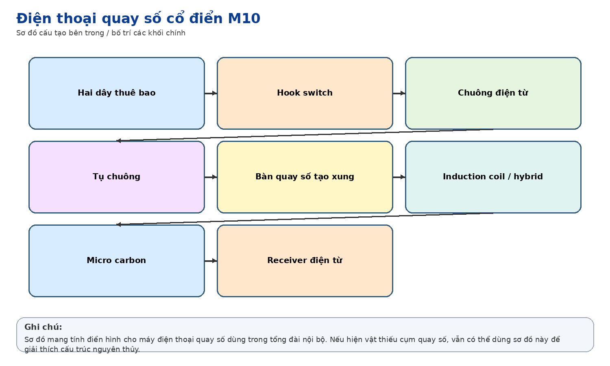
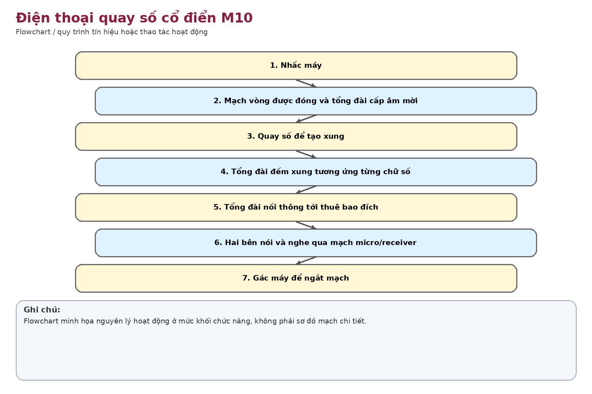
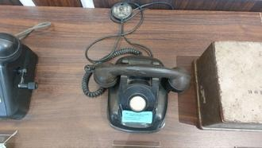

Nhận dạng & niên đại
Công dụng
Công dụng chung
Máy thuê bao điện thoại quay số xung, dùng qua tổng đài nội bộ/analog.
Trong thông tin tín hiệu đường sắt
Dùng cho điện thoại nội bộ văn phòng, nhà ga, xí nghiệp hoặc các phòng chức năng kết nối tổng đài của đơn vị.
Phạm vi làm việc
Cơ cấu cơ khí dễ sửa chữa, phù hợp tổng đài analog; tốc độ quay số và chức năng hạn chế so với điện thoại phím.
Cấu tạo bên trong

Handset, hook switch, mạng thoại, chuông, vị trí cụm quay số. Hiện ảnh cho thấy phần đĩa quay có thể thiếu/đã được thay bằng tấm che, vì vậy hiện vật có thể không còn đầy đủ nguyên trạng.
Cách thức hoạt động

Cơ cấu quay số tạo chuỗi ngắt dòng mạch vòng theo chữ số; tổng đài đếm xung để nối thuê bao. Nhấc handset đóng mạch thoại và nhận nguồn từ tổng đài.
Thông số kỹ thuật
Thông số chính
Chưa có thông số model. Dải điện/chuông phụ thuộc tổng đài sử dụng.
Nguồn điện / cấp nguồn
Thông thường common-battery từ tổng đài; không cần nguồn lưới tại máy.
Giá trị lịch sử – trưng bày
Cho thấy lớp thiết bị liên lạc nội bộ truyền thống trong giai đoạn tổng đài cơ điện/analog.
Tình trạng quan sát
Vỏ đen kiểu cổ, handset còn đủ; vị trí đĩa quay không còn thấy vòng số/finger wheel như máy quay số hoàn chỉnh.
Ảnh hiện vật

Xác minh thêm & nguồn tham khảo
Căn cứ mốc sử dụng tại Việt Nam/ĐSVN:
Cao
về công dụng theo nhãn; thấp về năm cụ thể.